화학반응공학 ch4: 등온반응기의 설계 (2)
저번시간 요약: 화학공정의 대부분의 반응은 1차, 2차 비가역 공정이다. 이때 몰수지, 속도법칙, 화학양론을 조합하여 각 반응기에서 1차, 2차 비가역 공정이 일어날 때 부피를 구하는 공식(암기는 중요하지 않음)과 구하는 과정을 학습하였다.

이때 사용했던 가정은 등온 등압에서 진행된다는 것이다.
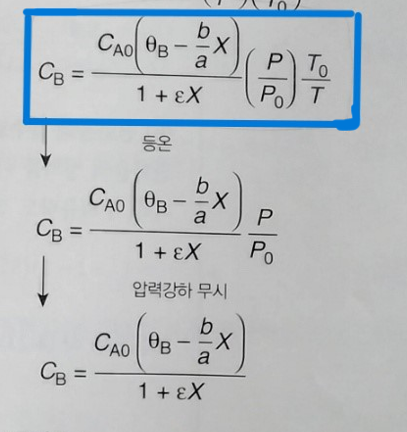
등온 등압에서 진행될 경우 농도식에 있던 온도, 압력 텀이 사라지면서 농도는 오직 전화율만의 함수가 된다.
그러나 압력강하가 무시되려면 액상반응이거나, 기상반응이라면 반응이 CSTR혹은 batch에서 일어나는 경우여야 한다.
1. CSTR에서의 기상 반응 (압력강하 무시가능)
- CSTR의 경우, 내부가 완전 혼합 상태를 유지하기 때문에 반응기 내 전체 압력이 거의 일정하게 유지됩니다.
- 그러나 기체가 유입되거나 유출될 때 반응기 외부와의 압력 차이로 인해 압력 강하가 발생할 수 있지만, 이 차이가 큰 영향을 주지 않는 경우라면 무시할 수 있습니다.
- 일반적으로 CSTR에서 압력 강하는 크게 고려되지 않으며, 반응기 내부가 잘 혼합된 상태로 압력이 일정하다는 가정이 적용됩니다.
2. PFR에서의 기상 반응 (가끔 무시가능)
- PFR에서는 반응기 길이를 따라 유체가 이동하면서 반응이 진행되기 때문에 반응물이 소비됨에 따라 압력이 점진적으로 감소할 수 있습니다.
- PFR에서 압력 강하를 무시할 수 있는지는 유량, 관의 길이와 직경, 반응 속도, 유체의 성질에 따라 결정됩니다.
- 반응기 내에서 흐름 속도가 너무 높지 않거나, 반응기 길이가 짧아 압력 강하가 미미할 경우에는 무시할 수 있습니다.
3. batch에서의 기상 반응 (무시가능)
- 밀폐 조건에서의 압력 변화: 반응이 진행됨에 따라 반응물의 몰수 변화로 인해 반응기 내 압력이 변할 수는 있지만, 이는 압력 강하가 아니라 압력 상승이나 감소로 나타나는 것이지, 유동에 따른 압력 강하는 아닙니다.
이때 화학 반응 공학에서 CSTR 액상 반응과 PFR 기상 반응이 가장 큰 비중을 차지하므로 가끔 우리는 압력강하를 고려해야할 때가 생긴다. 특히 PBR을 쓸 경우 압력강하의 고려는 필수적이다.
그냥 왠만해서는 기상반응이면 압력강하를 고려해야한다고 보면 된다.
1)압력강하와 속도법칙
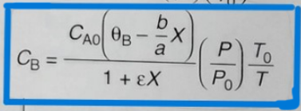
농도에서 압력강하를 고려하기 위해서는, P/P0 비를 부피 V 또는 촉매무게 W의 함수로 나타내어야만 한다. 이때 반드시 미분형 몰수지를 사용해야 한다. 예를 들어 PBR에서 미분형 몰수지는 다음과 같다.
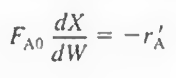
이때, 변수는 X와 W이므로 이때 -ra(=kCACB)에 있는 P/P0는 X또는 W에 관한 항으로 나타내어져야 한다. 보통 PBR의 경우 압력을 W와 관계짓는다.
만약 다음 기상반응이 일어난다면
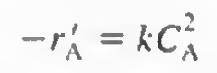
농도는 다음과 같고
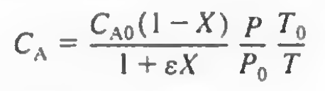
속도식 및 몰수지에 대입시 다음과 같다
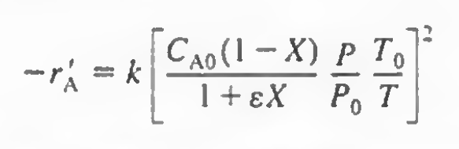 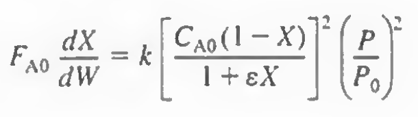
이 식을 풀려면 P/P0를 W와 관계지어주는 식 하나가 더 필요하다. 이는 에르군식으로 주어진다.
2)에르군식: 충전층을 통한 흐름에서 P와 W를 관계지어주는 식
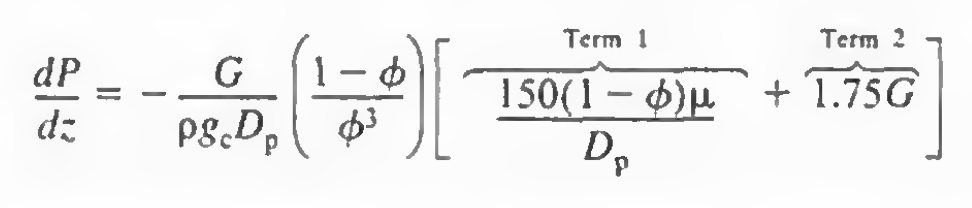
반응기에 질량보존 법칙을 적용하여 밀도항을 다음처럼 바꾸자.
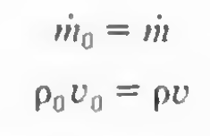 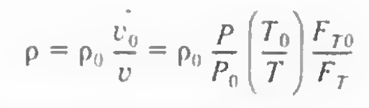 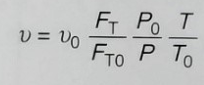
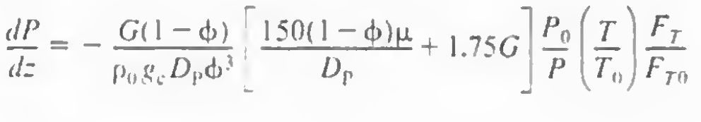
최종적으로 위 식이 되며 간략화하면 다음과 같다.
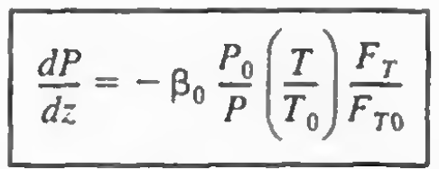 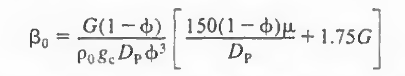
하지만 P와 z사이 관계식이지 P와 W사이 관계식이 아니므로, z항을 W로 바꿔주어야 한다. 이는 다음과 같다.
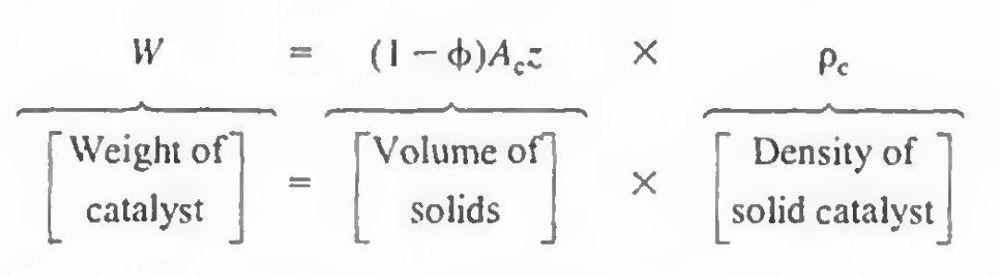
이걸로 z를 W로 대체하면 다음과 같다.
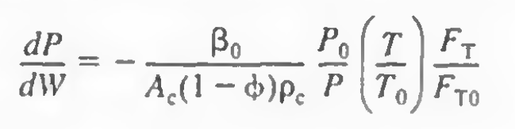
이를 간략히 하면
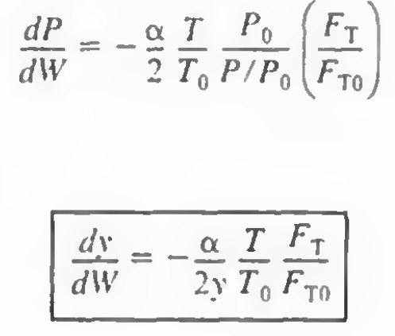
이를 정리해보면 다음 식으로 나타낼 수 있다.
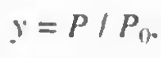 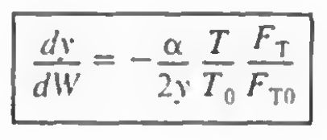 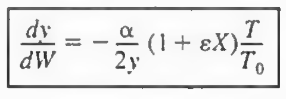 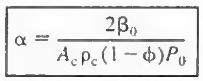
이때 1식은 복합반응, 또는 멤브레인에서, 2식은 PBR에서 단일반응이 일어나는 경우 사용한다.
유도가 길었는데 바로 위 공식만 알고있으면 된다. 이게 의미하는 것은 압력P항을 W와 관계지어주는 식이다.
정리: 몰수지(미분), 속도법칙, 화학양론을 결합한 식1, 에르군식을 이용해 P-W를 관계지어주는 식2를 연립하여 풀어 원하는 전화율이나 부피등을 구할 수 있다.
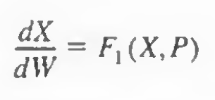 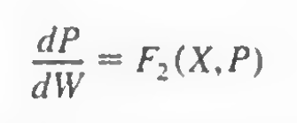
해석해:
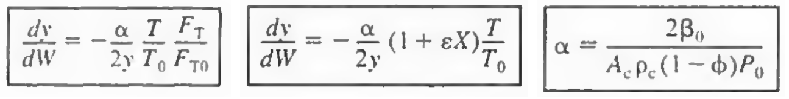
2식에서 만약 등온조작이고, e=0이거나 또는 eX가 1보다 매우 작아 무시할 수 있다면 식은 다음처럼 변한다.
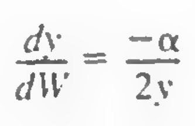 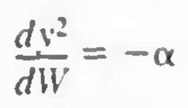
이제 W=0일때 y=1인 조건에서 적분하면
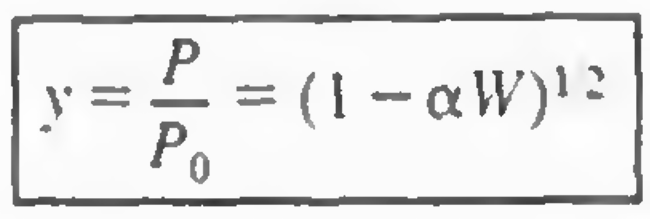
만약 등온조작이고, e=0이거나 또는 eX가 1보다 매우 작아 무시할 수 있다면 이 식을 쓸 수 있다. 이 경우에 압력은 W로 쉽게 나타내어져서 몰 수지식은 전화율과 촉매무게만의 함수가 되므로 적분하여 쉽게 풀 수 있다.
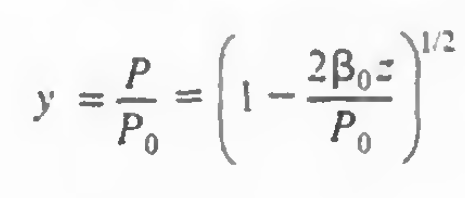
만약 압력을 z의 함수로 나타내고 싶다면 위 식을 쓴다. W를 Z항으로 치환한 것이다.
3) PFR에서의 압력강하
일반적으로 충전물이 없는 관을 통하여 흐르는 기체의 경우, 압력 강하를 무시할 수 있는 경우가 있습니다. 그러나 몇 가지 조건이 충족되어야 합니다:
- 관의 직경이 충분히 크고 흐름 속도가 낮을 때: 기체의 흐름이 저속일 경우, 마찰로 인한 압력 강하가 미미할 수 있습니다. 이 경우 압력 강하를 무시할 수 있습니다.
- 관의 길이가 짧을 때: 관의 길이가 짧으면 전체 압력 강하가 작아지기 때문에 무시할 수 있습니다.
- 기체의 점도가 낮을 때: 점도가 낮은 기체는 마찰에 의한 압력 강하가 적어져, 압력 강하를 무시할 수 있습니다.
- 관의 형태가 간단할 때: 직선 형태의 관이나 급격한 굴곡이 없는 경우, 압력 강하가 줄어들어 무시할 수 있습니다.
그러나 이러한 조건들이 충족되지 않는다면, 특히 고속 흐름이나 긴 관을 사용할 때는 압력 강하를 고려해야 합니다. 이러한 경우에는 베르누이 방정식이나 다양한 마찰 손실 계산식을 사용하여 압력 강하를 평가할 수 있습니다.
결론적으로, 충전물이 없는 관에서의 기체 흐름은 특정 조건 하에 압력 강하를 무시할 수 있지만, 일반적인 경우에는 주의 깊게 분석할 필요가 있습니다.
즉 특정조건이 없다면 PFR에서 기상흐름에도 압력강하가 발생하며 관 길이에 따른 압력강하는 다음과 같다.
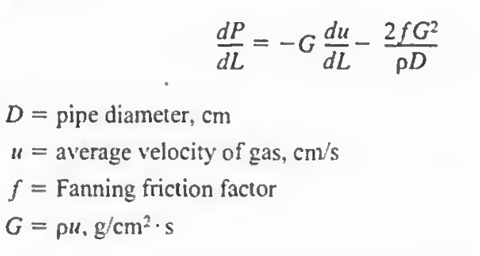
마찰인자 f는 레이놀즈수와 관의 roughness의 함수이다. 또 G는 질량속도로 관길이에 따라 일정하다. u를 G/밀도로 바꾸고 일정온도 T와 일정한 총 몰유량 FT인 경우에 위 식은 다음처럼 바뀐다.
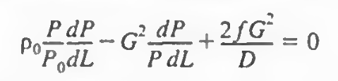
L=0에서 P=P0 로 적분하면
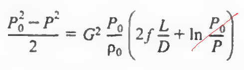 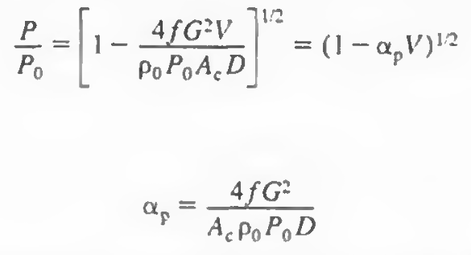
즉, 이 식은 P/P0를 V와 관계지어주는 식이다.
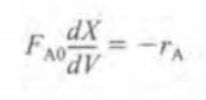
PFR의 몰 수지에서 변수는 V이므로, P를 V에 관해 나타내주는 것이다. 따라서 이는 PFR의 에르군식이라고 보면 된다.
4)압력강하가 있는 반응에 대한 해석해
압력 강하가 있는 경우와 없는 경우, 반응 속도와 전환율에는 차이가 발생할 수 있습니다.
1. 압력 강하가 없는 경우:
- 반응 속도: 반응기에 걸쳐 일정한 압력이 유지되므로, 반응 속도도 일정하게 유지될 가능성이 높습니다. 특히 이상기체의 경우, 일정한 압력과 온도에서 기체의 농도가 일정하게 유지됩니다.
- 전환율: 일정한 압력에서 반응이 진행되기 때문에, 전환율이 목표치에 도달하는 시간이나 필요 부피를 상대적으로 예측하기 쉽습니다.
2. 압력 강하가 있는 경우:
- 반응 속도: 반응기가 길어질수록 압력이 감소하기 때문에, 압력에 따라 반응물 농도가 줄어들게 됩니다. 이로 인해 반응 속도가 점차 낮아질 수 있습니다.
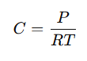
- 전환율: 반응 속도가 감소하면 전체 전환율도 영향을 받습니다. 예를 들어, 반응기 후반부로 갈수록 속도가 낮아져 목표 전환율을 달성하기 위해 더 긴 반응기 부피가 필요하거나 추가적인 조치가 요구될 수 있습니다.
결론
압력 강하가 있는 경우, 반응기 내 압력 저하로 인해 반응 속도와 전환율이 모두 영향을 받을 수 있습니다. 이러한 이유로 압력 강하를 고려하지 않고 설계할 경우, 예상 전환율에 도달하지 못할 가능성이 있으며, 최적화된 설계를 위해서는 압력 강하를 정확히 반영하여 농도 및 반응 속도를 조정하는 것이 필요합니다.
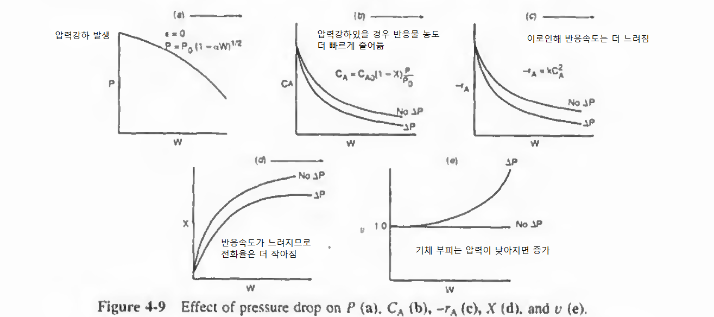
압력강하가 있는 경우의 예제를 풀어보자.
4.4:충전층에서 압력강하 계산
문제: 직경 1/4인치 촉매입자들이 충전된 길이 60ft인 1과 1/2인치 스케줄 40관에서 압력강하를 구하여 도시하여라.
층을 통하여 기체가 104.4lb/h로 흐르고 있다. 온도는 260도로 관길이에 따라 일정하다(등온) 공극률은 45%이며 기체의 특성은 이 온도에서 공기의 특성과 같다. 유입압력은 10atm이다.
분석: 일단 파이프의 길이와 스케줄이 주어지고 기체의 유량과 유입압력 및 온도가 주어졌다.
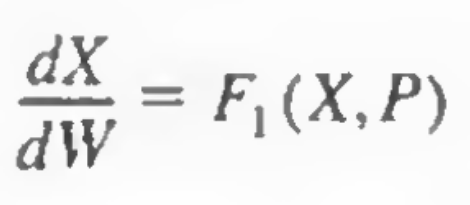
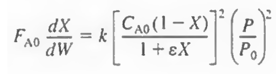
PBR에서 몰 수지를 쓴다면 위와 비슷하게 dX/dW = X와 P의 함수가 된다. 이제 P와 W를 연관지어주는 에르군 식을 도입하여 P라는 변수를 W에 관하여 나타내어 변수의 수를 줄인다.
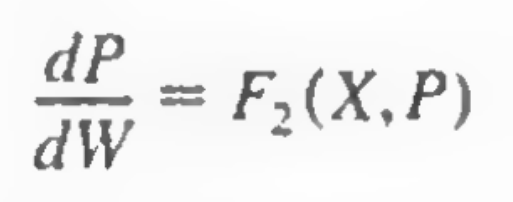
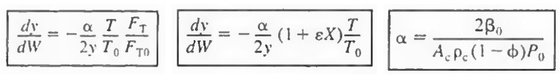
이때 에르군식에는 단면적, 공극률, 고체촉매의 밀도, 초기압력과 B0항이 들어간다.
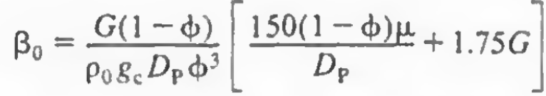
B0는 G=ℓ*u (밀도*(공탑속도=부피흐름/관의 단면적)), 층 내의 입자직경 Dp, 점도의 함수이다.
등온이고 흐르기만 하므로 e=0이다. 따라서 해석해에서 유도한 공식을 쓸 수 있다. 압력강하를 파이프의 길이 z에 관해 나타내주는 에르군 식을 사용한다.
여기서 B0항을 구하기 위해 G를 먼저 구해보자. G는 전체 흐르는 유체를 단면적으로 나눠주면 된다.
이후부터는 계산이라 생략한다.
파이프학개론
**스케줄(Schedule)**은 파이프의 벽 두께를 나타내는 표준화된 값입니다. 일반적으로 파이프의 스케줄이 높아질수록 벽 두께가 두꺼워지며, 내경은 작아지게 됩니다. 스케줄은 파이프의 내압 성능에 영향을 주기 때문에, 고압이나 고온 환경에서는 높은 스케줄의 파이프가 사용됩니다.
스케줄 번호와 의미
스케줄 번호는 주로 다음과 같은 번호로 구분됩니다:
- 스케줄 5, 10, 20, 30: 비교적 얇은 벽 두께, 저압 환경에 적합
- 스케줄 40: 일반적인 배관용으로 흔히 사용되는 두께
- 스케줄 80: 고압 환경에 적합한 두께, 스케줄 40보다 더 두꺼움
- 스케줄 120, 160: 고압 및 고온을 견디는 두꺼운 파이프
- XXS (Double Extra Strong): 매우 두꺼운 파이프, 고압용
실제로는 스케줄 5에서 160까지 있으며, 스케줄이 높아질수록 벽 두께가 증가합니다.
가장 많이 쓰이는 파이프 스케줄은 스케줄 40과 스케줄 80입니다.
- 스케줄 40:
- 일반적인 배관 용도로 가장 널리 사용됩니다.
- 가정용 및 산업용 배관, 특히 물이나 공기 등의 저압 시스템에 적합합니다.
- 비용이 비교적 저렴하고 쉽게 구할 수 있어 다양한 환경에서 채택됩니다.
- 스케줄 80:
- 고압 또는 고온 환경에서 사용되는 파이프입니다.
- 화학 플랜트나 고온 배관 시스템 등에서 선호되며, 산업용으로 많이 사용됩니다.
- 스케줄 40보다 두껍기 때문에 내압 성능이 우수합니다.
이 두 스케줄이 가장 많이 쓰이는 이유는, 각각 저압과 고압을 아우르면서도 다양한 환경에 대응할 수 있기 때문입니다.
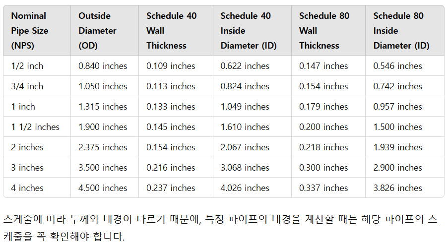